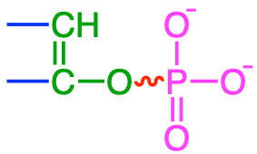

Chapter 5 Energy generation and aerobic respiration
5.1 Generating energy: transfer of electrons
Chapter summary:
- Living organisms have found ways to release energy stored as electrons on organic molecules without combustion
- The energy currency and intermediate is the magical ATP molecule
- The ATP molecule releases energy without the transfer of electrons thanks to the phosphoanhydride bond
- The synthesis of most ATP molecules is driven by the Proton Motive Force created by a proton gradient maintained by proton pumps, themselves powered by electron transfer molecules (NAD and FAD) recharged through the Krebs cycle by electrons originally stored on organic carbon.
- The transfer of energy and electrons can be summarized in respiration schemes illustrating the electron donors, acceptors, and the byproducts of oxidation and reduction.
Us humans have the freedom to go about as we wish. All we need is to eat, drink, breath, and eliminate what we do not need. We could take our automobile cars as another example of bodies able to move about as long as they are fed some fuel. A lot of energy is released from combustion of fuel or wood. In fact, provided that this energy be funneled into some very smart mechanical systems (e.g., combustion engines), and the energy power delivered is largely superior to any power any human could output. However, the energy consumed is also phenomenal and much of it is lost through heat. Life has found a way to be a lot more parsimonious with energy spending, which makes living organisms to be a lot more energy efficient than combustion in the long run: the respiration process.
But in both the cases of combustion or of respiration, energy is liberated or transferred to ATP, respectively, when electrons are transferred from an electron donor to an electron acceptor. Not surprisingly, life and its diversity as we know it, has been able to develop on our planet because primary producers have been able to transfer and store solar energy into a chemical energy, where electrons are effectively stored onto organic molecules, and, because dioxygen O2, the most powerful electron acceptor, is freely floating in our atmosphere.
But, then if we ourselves are nothing but a lot of organic matter, therefore a very large source of electrons, and if we leave in an oxygenated environment, how come we are not going into combustion? Obviously this applies to all living organisms. Some of you might think that it is because of the water. But then why would not a very dry piece of paper, or leaves, not automatically catch on fire? The answer lays in two words: activation energy.
Electrons do not readily transfer from an electron donor to an electron acceptor because of the activation energy barrier which must be overcome. Activation energy is the level of energy necessary to be overcome for a reaction to carry on. On the Figure below borrowed from Wikipedia, the energy difference between the peaks and the final energy level corresponds to the activation energy Ea.
, Copyrighted free use](pictures/EnergyActivation.jpg)
Figure 5.1: Activation Energy (Ea) needed for a reaction to proceed. (Ea) can be lowered thanks to a catalyst, and in the case of the respiration chain of living organisms, many of them. Figure borrowed from Nature Scitable, Copyrighted free use
In normal conditions, this energy is preventing a reaction to proceed. This is why wood or most organic matter do not go into combustion or decomposition on their own. Nitroglycerin is notoriously unstable and the activation energy for electrons to be transferred to O2 is very small, hence its propensity to explode and its danger. However, the activation energy can be overcome with enough heat brought near an electron donor in the form of a flame or a spark. Not much heat is necessary for natural gas (CH4) for combustion to take place, i.e., for transfer of electrons from the carbon to oxygen:
\[\begin{equation} CH_4 + 2 O_2 \Rightarrow CO_2 + 2 H_2O \tag{5.1} \end{equation}\]
Because there are as many moles of reactant gases as there are of product gases, this reaction is not explosive, which is the reason why we can use it without danger for cooking and heating. Overall, it is possible to summarize in an electron transfer flow scheme (Figure 5.2) the transfer of electrons from methane, i.e., the electron donor, to dioxygen, i.e., the electron acceptor, the byproduct of carbon losing its electrons is CO2 and that of oxygen gaining electrons is H2O (and CO2 as well).

Figure 5.2: Summry of the transfer of electrons during oxidative combustion of methane, illustrating the electron donor, acceptor, the byproducts, and the energy released
A lot of energy in methane combustion is thus generated but almost instantaneously and is not really ubiquitous and certainly not reversible at an affordable energy cost… So clearly life had to find better solutions:
- to generate energy in a process which would allow the energy delivery not to be too large, and not burn up
- as such would have the products or elements of energy delivery be recyclable, or the energy system be refillable at the molecular scale
5.2 Generating energy without combustion: ATP or the energy currency of the cell
Now because none of us and all the living organisms with us, burn to generate energy, there must be other systems to manage to liberate energy, and, there must be ways to have much lower activation energy. Life has found several mechanisms to optimize the transfer of energy from organic matter to a magic molecule: ATP or Adenosine TriPhosphate.
There are many ways of transferring energy. To heat a house in the western world, we most often have a centralized heating (and sometimes cooling) system, where the heat is generated, e.g., in a furnace, and then transferred to the rest of the house via pipes and the like. The equivalent system might be for mammals the blood that gets re-oxygenated with the lungs, before it delivers oxygen throughout the body.
At the cellular level, however, ATP or Adenosine TriPhosphate is created throughout the cell near the equivalent of the little furnaces: an entire organelle called mitochondria in eukaroytic cells, and ATPases directly at the innermembrane of prokaryotic cells. Needless to say, there is no combustion with the mitochondria or at the bacteria membrane, and yet there is transfer of electrons and energy delivered. The energy is transferred from the organic matter to ATP, and ATP being a relatively small molecule, can easily reach all metabolic processes, usually operated by proteins, which need energy to proceed (to overcome the activation energy mentioned above).

Figure 5.3: ATP molecular structure containing adenosine (= adenine + ribose) and the three phosphate linked together with a pyrophosphate energy rich bond. Copyrighht Pearson Benjamin Cummings
The key to storing energy is in the instability of the bond between the phosphates, which are often referred to as “high-energy bonds” (Lipmann 1941), although this denomination has been heavily criticized because it might be misleading (e.g., Lehninger 1965). The hydrolysis of the pyrophosphate bond or diphospho anhydride linkages in ATP releases a lot of energy (ΔG°′ = -32 kJ mol-1), hence the original naming of Lipmann (1941). A common representation of this reaction is \(ATP \Rightarrow ADP + P_i\) with the Pi referring to as a dioxygenated phosphate, i.e., a phosphoryl \(-PO_3^{2-}\). In practice though and as represented in Figure 5.4, the same reaction is actually \(ATP + H_2O \Rightarrow ADP + HPO_4^{3-} + H^+\) (Figure 5.4).
But in reality, it is not the ‘breaking of’ the pyrophosphate bond that releases energy as most bond breaking are endergonic (consume energy), but rather it is the fact that the molecular products (ADP +Pi) are more stable than ATP as all the bonds in ADP and in phosphate are lower in energy. Indeed, there seems to be three factors explaining the exergonic nature of of ATP hydrolysis (Moran 2012):
- the concentration of electrons at the diphospho anhydride bond creates great instability between bonded phosphate tetrahedra (Degens 1989) because of electrostatic repulsion among the negatively charged oxygen atoms
- the products of hydrolysis, ADP and inorganic phosphate, or AMP and inorganic pyrophosphate, are better solvated than ATP itself. When ions are solvated, they are electrically shielded from each other. The decrease in the repulsion between phosphate groups helps drive hydrolysis (Moran 2012)
- the products of hydrolysis are more stable than ATP. The electrons on terminal oxygen atoms are more delocalized than those on bridging oxygen atoms, creating resonance stabilization
All of this, combined with the fact that the ATP:ADP ratio is maintained around 1,000 in cells, leads to the fact that ATP is the main source of energy transfer in cells and as such is referred to as the energy currency of the cell.
The exergonic nature of the ATP hydrolysis is the fundamental principle for the release of energy from ATP, Adenosine Tri-Phosphate.

Figure 5.4: Release of energy ATP hydrolyzed into ADP. http://hyperphysics.phy-astr.gsu.edu/hbase/Biology/atp.html
Now that we have allocated electrons on atoms and molecules, you easily understand that the number of electrons on the outside of the triplet \(PO_3-O-PO_2-O-PO_2\) is huge. In his fantastic book, Degens (1989) suggests that
- because of the plethora of electrons on the triphosphate part of ATP,
- because the tetrahedral phosphate molecules are linked together by one of the corners of each tetrahedron (Figure 5.5),
- and because of the \(\pi\) electron bonds (double bond) which tends to repulse each other (Degens 1989),
the triphosphate molecule can only be in constant movement, which ‘maintains the animated world’ (Degens 1989).

Figure 5.5: Tetrahedral configuration of each of the phosphate molecule which when linked together supposedly are in constant movement
5.3 The ATP manufacture
5.3.1 Substrate-level versus oxidative phosphorylation
The beauty of \(ATP \Rightarrow ADP + P_i + energy\) is that the ingredients to store the energy are still there, namely ADP and Pi and their oxidation states have not changed, or in other words, they have not lost electrons. Manufacturing back ATP is thus possible within the cell by reversing the previous reaction into \(ADP + P_i + energy \Rightarrow ATP\). Obviously, this reaction requires to energize the electrons of the phosphate back to a higher level to recreate the diphospho anhydride bond.
If ATP freely releases energy for a reaction to proceed in the cell, as ATP becomes ADP + Pi, there must be energy at one point to ‘manufacture’ or recharge the ATP molecule in the first place. We have seen that much of the energy in the cell is transferred thanks to the ATP molecule. So could one just make ATP from the energy liberated by ATP? The answer is no, obviously… The energy to create ATP has to come from elsewhere, otherwise it just cannot work.
Life has found two wonderful ways to recreate the diphospho anhydride bond thanks to what are referred to as substrate-level phosphorylation and oxidative phosphorylation. The substrate-level phosphorylation is reviewed later in the glycolysis part of this chapter.
These two phosphorylations occur within two main suites of processes called respiration and fermentation. The big difference between respiration and fermentation is the presence or absence, respectively, of exogenous electron acceptors (Figure 5.6). Both respiration and fermentation start with a cascade of reactions collectively referred to as Glycolysis. The suffix -lysis means ‘breaking’ and the prefix glyco- stands for glucose. Glycolysis is the suite of processes that break glucose, and in fact break glucose into two molecules of pyruvate. Although more details are provided in the a dedicated section, glycolysis results in the net formation of 2 ATP by substrate-level phosphorylation and the transfer of 4 electrons out of each glucose molecule.
The formation of 2 ATP during glycolysis can only continue to occur if the 4 electrons taken out of glucose have some place to be accepted. Otherwise, glycolysis stops. In abscence of exogenous electron acceptors, i.e., electron acceptors from outside the cell, these four electrons are accepted onto organic molecules to form well known products such as ethanol, acetic acid, lactic acid, butyric acid, or even H2 (details in the the fermentation part of this chapter). In the end, most of the electrons originally stored on glucose are still stored onto organic molecules in fermentation. And this is one reason why fermentation provides little energy in the form of ATP (only 2 ATP for each glucose molecule).
![Transfer of electrons from glucose generates 18 times more ATP in respiration than in fermentation. Most of the ATP (30-32 or 90%; illustrated in red text) is produced during the ***oxidative phosphorylation*** of respiration, while 4 ATP (10%) are produced by substrate-level phosphorylation (illustrated in green text) during glycolysis and the Krebs cycle. Electrons transported on organic molecules are framed in rectangle boxes, and those tranported on Electron Transfer Molecules are framed in 'explosion boxes'](pictures/respiration-vs-fermentation.png)
Figure 5.6: Transfer of electrons from glucose generates 18 times more ATP in respiration than in fermentation. Most of the ATP (30-32 or 90%; illustrated in red text) is produced during the oxidative phosphorylation of respiration, while 4 ATP (10%) are produced by substrate-level phosphorylation (illustrated in green text) during glycolysis and the Krebs cycle. Electrons transported on organic molecules are framed in rectangle boxes, and those tranported on Electron Transfer Molecules are framed in ‘explosion boxes’
Reversely, in respiration, the 24 electrons originally on the glucose can be all transferred to exogenous electron acceptors. The big difference occurs after glycolysis: all the electrons stored on glucose eventually power the oxidative phosphorylation processes (Figure 5.6). The twenty four electrons originally stored on glucose generate up to 36 ATP molecules, or 1.5 molecules of ATP per electron transferred on average, compared to 0.5 ATP produced per electron transferred during glycolysis, and thus in fermentation. Obviously the mechanism for creating ATP after glycolysis must be very different in respiration than in fermentation. And the difference is in the oxidative phosphorylation that occurs after the Krebs cycle. There must be a secret for oxidative phosphorylation to be so much more efficient. The next section explores this secret.
Because the oxidative phosphorylation generates about 90% of ATP produced, the next section are focused on this very process. Description of the glycolysis and the Krebs cycle are provided afterwards, although they truly occur upstream of the oxidative phosphorylation, because both are associated with substrate level phosphorylation.
5.4 Respiration: providing most ATP thanks to exogenous electron acceptors and oxidative phosphorylation
Again, respiration involves a cascading series of three suites of reactions/processes called:
- Glycolysis
- the Krebs or citric acid cycle, and
- the oxidative phosphorylation (Figure 5.6)
For prokaryotic and eukaryotic cells, most of the ATP are synthesized thanks to the oxidative phosphorylation of respiration as mentioned above (Figure 5.6; more details below). For eukaryotic cells, glycolysis takes place outside of the mitochondria, while the Krebs or citric acid cycle (named after Sir Hans Adolph Krebs) and the oxidative phosphorylations take place inside the mitochondria (Figure 5.7).

Figure 5.7: Summary of cellular respiration with the ATP and electron transfer budget. Obtained from https://cdn.thinglink.me/api/image/847806852426104839/1240/10/scaletowidth
The secret is that in oxidative phosphorylation, the energy of the electron is transferred into chemiosmosis, or an accumulation of protons inside designated compartments and organelles, which creates a proton gradient that drives a powerful proton flow at the equivalent of valves literally providing a mechanical force, referred to as the Proton Motive Force. ATP is formed from an ADP and a dehydroxylated phosphate (i.e., a phosphoryl) and assembled thanks to a protein called ATP synthase, or ATPase, which is activated or powered mechanically, very much like a water mill, by a proton flow (Figure 5.8), which mechanically forces the diphospho anhydride bond to be created (Figures 5.8 and 5.9) while the electrons are energized. This is the secret of the efficiency (at least 3 times more) of the oxidative, compared to substrate level phosphorylation.

Figure 5.8: Artist representation of the ATP synthase powered, almost mechanically by proton flows. By The original uploader was Asw-hamburg at German Wikipedia - Transferred from de.wikipedia to Commons by Leyo using CommonsHelper., CC BY-SA 3.0, https://commons.wikimedia.org/w/index.php?curid=8993938
The ATPase has a base embedded in the membrane, referred to as the FO region, and a ‘head’, which looks a bit like a ‘mushroom hat’ (Figure 5.9). The so called C-subunit ring rotates in the so called a-subunit of the base of the ATPase as a result of the proton flow and allows the phosphorylation of ADP. It is thus fair to call the ATPase a ‘proton mill’. Figure 5.9 shows very nicely how the mechanical force of the H+ flow is thought to allow the phosphoryl radical Pi to be attached to an ADP.
In summary, this mechanical force is what generates the phosphorylation of ADP to ATP. So this solves that part of the ATP synthesis. Now, another mechanism must be responsible for the formation of the proton flow.
Figure 5.9: ATP synthase in action. Obtained with permission from HarvardX
To make sure there be no confusion here, the expression phosphorylation corresponds to the effective addition of a phosphoryl \(-PO_3^{2-}\) radical to the diphosphate part of ADP (Figure 5.10). This is why the phosphorylation of ADP is summarized as \(ADP + P_i \Rightarrow ATP\), where Pi is used to represent a phosphoryl group. Despite this, we still refer to as triphosphate for the ATP molecule, because practically a phosphoryl group is a dehydroxylated phosphate. The OH- produced combines with the flow of protons to form water.

Figure 5.10: Phosphorylation: addition of a phosphoryl group to ADP to form ATP
5.4.1 Creating a proton gradient as a source of proton flow
Until now, we have hardly mentioned where all this takes place. We are about to see where this happens. But first, let us take an analogy to better understand the proton flow responsible for the synthesis of ATP. Flow of matter just does not happen on its own, it only happens as a result of a gradient between a compartment and another. Using the water mill analogy, the reason why there is release of energy in the form of kinetic energy of the water is because there is a drop in elevation, and therefore in potential energy between the ‘compartments’ upstream and downstream the mill. To increase the hydraulic gradient, men throughout the world have built dams to create compartments and increase the hydraulic gradient between upstream and downstream the mill. So in the water mill analogy, the hydraulic gradient is maintained thanks to the dam which creates compartments, and to the continuous arrival of new water upstream and to the leaving of water downstream. So four things are necessary for the wheel to turn by the release of kinetic energy (which in the end and in the old days would grind wheat or corn grain; Figure 5.11):
- a system to compartmentalize water,
- a supply of water,
- a water mill rotation powered by water momentum, and,
- an outlet for the water so that is does not accumulate.
](pictures/WaterMill.png)
Figure 5.11: The mechanical force of water flow to rotate a water mill wheel is possible thanks to the maintenance of water head gradient between upstream and downstream of the wheel. This gradient exists and is maintained thanks to a dam which creates upstream and downstream compartments, the supply of water upstream, and enough channel slope such that water does not accumulate downstream. After Malcolm.boura
By analogy, the formation of ATP corresponds to the grain grinding; the proton flow corresponds to the water flowing that activates the mill wheel, and in our case the proton flow activates the ATPase. We now need to address the four parts of the system needed to have a proton gradient and flow, and a rotation of the ATPase:
- a compartment system in the intermembrane space,
- a proton supply system (to the intermembrane space),
- the ATP synthase powered by a proton flow exerting a Proton Motive Force, and,
- a system to use protons (in the outer membrane space) so the gradient is maintained.
5.4.2 A compartment to accumulate protons
We saw earlier that the double phospholipid layer made the cell membrane. Well if one closes a membrane on itself, one will make a compartment or a balloon. It turns out that if one looks at a typical prokaryotic cell and at organelles in a eukaryotic cell (Figure 5.12), there are compartments formed between a cell wall and the plasma membrane for prokaryotic cells, and between two double layer phospholipid membranes for the eukaryotic cells. So in reality, it is a bit as if one were to create a space between two balloons.


Figure 5.12: Artist representation of a prokaryotic cell and a mitochondrion from a eukaryotic showing the intermembrane spaces: between the cell wall and plasma membrane for the prokaryotic cell, and, between the outer and inner membranes for the mitochondrion. https://micro.magnet.fsu.edu/cells/animals/animalmodel.html and By Kelvinsong - Own work, CC0, https://commons.wikimedia.org/w/index.php?curid=27715320
At the end though, there exists for prokaryotic cells and mitochondria (and most organelles for eukaryotic cell) an outer and an inner membrane, which effectively create intermembrane spaces or compartments to accumulate ‘things’. The double phospholipid membrane is so strong and so tight that it is quite proton-tight, in part thanks to the cardiolipin phospholipids. In other words, if somehow protons accumulate in this intermembrane space, protons cannot leave easily through the membrane through diffusion, but rather can leave through designated areas. And yes, you guessed right, the designated area for protons to leave the intermembrane space is the ATP synthase. So to take another analogy, you can imagine an inner tube full of air under pressure, and although air can leave through the inner tube over long periods (that is why tires eventually go flat), air can only leave through the valve in large volumes. And if you were to put a little fan in front of the valve as you are releasing air, the fan would rotate. Imagine that this is essentially what happens: the ATPase is both the valve and the fan as it literally rotates with the proton flow.
{kind=link}
5.4.3 A supply of protons for the intermembrane space: proton pumps
Now, the next natural question is that in the case of an inner tube, somebody pumped some air into the tube to put it under pressure. Similarly, there must be a system that pumps protons into the inter-membrane space. And yes indeed, there are proton pumps that do the job. But again, these pumps must be powered by some sort of energy.
Let us pause for a second. We have seen in section 5.1 that generally speaking, energy is generated from the transfer of electrons. But until now, we have not even mentioned electrons: only ATP and protons…? This is where electrons come in: energetic electrons transported onto electron transfer molecules are the ones that power the proton pumps! It is time to take a bird’s eye view again. Energy liberation exists when electrons are transferred from an electron donor to an electron acceptor. Life has found a way to capture this energy in the form of ATP, which allows transportation of energy to the needed places in the cell. So the energy transfer in the cell does not have to be totally instantaneous like combustion would be, and it can be spent exactly where it needs to be spent.
Yet, the production of ATP is in fact generated by an electron transfer, but indirectly.
- No, electrons are NOT transferred from organic matter to ATP.
- Yes, electrons are ultimately transferred from organic matter to an electron acceptor, which in the case of aerobic respiration is O2.
But just like the generation of ATP is indirectly linked to the electron transfer, the transfer of electrons from organic matter to the ultimate electron acceptor is also indirect. A set of molecules called electron transfer molecules, called NAD+ and FAD are intermediate carrier of electrons and are the ones which power the proton pumps as represented in Figure 5.13 below.
![Electron transport chain occur within complexes I to IV at the innermembrane of a mitochondrion for eukaryots, or, of the cytoplasm for prokaryots. NADH directly powers complex I and there is enough energy from these electrons to also power complexes III and IV to pump protons in the intermembrane space. Complex II accepts electrons from FADH~2~ molecule (itself reduced by succinate - from the Krebs cycle - within complex II) and these electrons combine with those originally from NADH to power complexes III and IV. Coenzyme Q or [ubiquinone](#vitaminsEK) is an intermediate between complexes I and III, and between II and III while cytochrome c is an intermediate between complexes III and IV. The flow of electrons within the membrane is illustrated by pink arrows [After Fvasconcellos](https://commons.wikimedia.org/w/index.php?curid=2716553)](pictures/electron-transfer-chain.png)
Figure 5.13: Electron transport chain occur within complexes I to IV at the innermembrane of a mitochondrion for eukaryots, or, of the cytoplasm for prokaryots. NADH directly powers complex I and there is enough energy from these electrons to also power complexes III and IV to pump protons in the intermembrane space. Complex II accepts electrons from FADH2 molecule (itself reduced by succinate - from the Krebs cycle - within complex II) and these electrons combine with those originally from NADH to power complexes III and IV. Coenzyme Q or ubiquinone is an intermediate between complexes I and III, and between II and III while cytochrome c is an intermediate between complexes III and IV. The flow of electrons within the membrane is illustrated by pink arrows After Fvasconcellos
A great summary of how electrons power the proton pumps in provided in the video in Figure 5.14. In short, there are four protein complexes referred to as Complexes I to IV (Figure 5.13). These protein complexes are configured to release the electron energy to pump electrons from the matrix into the intermembrane space. The ubiquinone molecule, isoprenoid described in chapter 4 is referred to as coenzyme Q in the video.
Figure 5.14: Proton pumps in action. Coenzyme Q corresponds to ubiquinone Obtained with permission from HarvardX
The bottom line is that the electrons that were originally on organic matter have enough energy to power proton pumps, even after glycolysis and transport onto NAD and FAD. Proton pumping results into the chemiosmosis and the proton motive force that provides the mechanical force to synthesize ATP.
5.4.4 Electron transfer molecules that power the proton pumps
The two main electron transfer molecules in the respiration process are called NAD (Nicotinamide Adenine Dinucleotide; Figure 5.15) and FAD (flavine adenine dinucleotide; Figure 5.16). These two nucleotides have the ability to be reduced (= gain electrons) and oxidized (= lose electrons), and because they are mobile, to carry electrons from the cell (bacteria) or mitochondrion (eukaryot) cytoplasm to the proton pumps. Actually, FAD in this context seems to be embedded into complex II and is reduced as succinate is oxidized into fumarate into the citric acid cycle (Figure 5.13).


Figure 5.15: Molecular formula of Nicotinamide Adenine Dinucleotide (NAD) in both oxydized and reduced states

Figure 5.16: Molecular formula of Flavine Adenine Dinucleotide (FAD) in both oxydized and reduced states
Notice that reduction and oxidation of NAD+ and FAD are made possible and reversible thanks to the cyclic rings where nitrogen is involved, creating stabilizing resonance and pseudo-conjugation.
5.4.5 Transfer of electrons from the Organic Carbon to an electron acceptor
So this answers the question of how the proton pumps are powered, but it is now time to look at the global fate of electrons: where do they come from and where do they end up? Actually, we already know the global answers to these questions: the electrons are stored unto the C, N, and S of organic molecules and they are eventually accepted by an electron acceptor; in the case of organotrophic aerobic respiration, O2 is the ultimate electron acceptor, and carbon atoms are the electron donors.
Before there might be any confusion, in the aerobic respiration process that involves organic molecules as electron donors (we will see that inorganic molecules can also be electron donors), strangely enough, the only atom which donates electron is carbon while the nitrogen and sulfur atoms keep all their eight electrons. Specialized microbes, called lithotrophs, literally ‘feed on stone’, which means that their source of electron is from an inorganic molecule, have the ability to use ammonium, hydrogen sulfide, methane, but also reduced iron and manganese as electron donor (8 electrons available for ‘donation’) in their aerobic respiration chains (details in section 7). So all this to say that in aerobic respiration that involves organic matter, only the carbon atom donates its electrons. The organisms which use organic matter as electron donors are called organotrophs. We, as mammals and humans, are organotrophs.
5.4.6 Oxygen reduction and oxidative phosphorylation
Let us start from the end of the process: the reduction of oxygen into H2O, as represented on Figure 5.13 above. As the NADH and FADH2 are powering proton pumps (which names include Complex I, III, and IV; see Figure 5.13), the electrons lose some of their energy and migrate within the phospholipid membrane from the Complex I to III and then IV, and, from complexes II to III, and then IV (Figure 5.14). Because of the involvement of many different proteins involved in this transport, this is referred to as the electron transfer chain. Because the NADH and the FADH2 molecules are oxidized (they have given up their electrons) enabling proton pumping, the whole process is referred to as oxidative phosphorylation. Within Complex IV (Figure 5.13), reaction (5.2) occurs:
\[\begin{equation} O_2 + 4 e^- + 4 H^+ \Rightarrow 2 H_2O \tag{5.2} \end{equation}\]
This is the place where the electrons are accepted!!! So now you know exactly where all this is happening! Is not that wonderful? So the electrons are accepted by O2 (remember on a molecule of O2, each oxygen atom only has 6 electrons for itself, so each can accept two more), and these electrons reduce oxygen into H2O. This has several consequences:
- the reduction of O2 also consumes 4 H+, which solves the necessity for an outlet for protons as they flow out of the inter-membrane space through the ATPase, which was the third condition to maintain a proton gradient
- the reduction of O2 obviously consumes electrons, which also provides an outlet for the electrons. In order words, if no electron acceptors are available, then the electrons at the proton pumps have no outlet, so the proton pumps are stalled, which in turn halts the maintaining of a proton gradient, which eventually stops the production of ATP.
5.4.7 Respiration electron flow schemes
These last sections were necessary but we now need to connect them with some of the practical consequences that concern ecological engineering.
- The electron donors are the fuel for all microbial processes involved in the substrate of ‘treatment systems’.
- The byproduct of the loss of electrons originally stored on the electron donor will be a source of inorganic molecules that matter
- When the electron acceptor is O2, this results in an oxygen demand which may have consequences on the overall oxygen level and may lead to anaerobic conditions, where other electron acceptors come in play
- We try to take advantage of the anaerobic conditions to dissipate or strip excess nutrients, e.g. NO3-
So we thought we could provide a nice concise summary of respiration to highlight the points that matter for environmental and microbial considerations in the form of respiration schemes, still maintaining some of the important drivers of the formation of ATP. In the first respiration scheme in Figure 5.17 below, the transfer of electrons is represented by the blue wavy line. Electrons are transferred from an electron donor to an electron acceptor. The consequences of the transfer are represented in thicker light blue arrows. The first consequence of the transfer of electrons is the powering of proton pumps, which in turn create a proton gradient in the inter-membrane space, which result into proton flow creating the proton motive force, which gives the necessary energy to catalyze the phosphorylation of ADP into ATP. The products of oxidation, reduction, and phosphorylation are represented in black arrows.

Figure 5.17: Generic respiration scheme illustrating the flow of electrons from an electron donor to and electron acceptor, the by-products of the respective oxidation and reduction, and the consequences on proton gradients and flow, which ultimately help catalyse the formation of ATP
The respiration scheme is obviously an oversimplified representation of the what happens as described above, but generally holds true. Some ATP are generated during glycolysis and in association with the Krebs cycle, but represent 4 out of a total of 38, or about 10% of the total. So it is probably fair to simplify things to represent the majority of the processes (here 90%). The beauty of this scheme is that it applies to just about all types of electron donors and acceptors.
5.4.8 Aerobic respiration schemes for organotrophs
In the next scheme, we take the classic example of aerobic respiration, where glucose is considered as the electron donor, and O2 the electron acceptor.

Figure 5.18: Aerobic respiration scheme illustrating the flow of electrons from glucose to O2, the by-products of the respective oxidation and reduction being CO2 and H2O, and H2O. The consequences of the transfer of electrons on proton pumps, gradients and flow, which ultimately help catalyse the formation of ATP, do not change from the generic respiration scheme above
Using the generic carbohydrate CH2O as a source of electrons, it is possible to express the donation of electrons in equation (5.3) (redox half reaction):
\[\begin{equation} CH_2O + H_2O \rightarrow CO_2 + 4 H^+ + 4 e^- \tag{5.3} \end{equation}\]
Organisms which use organic molecules as electron donors are referred to as organotrophs, hence the title. We shall see later that some microorganisms are able to use inorganic molecules as their electron donors. In our case (Figure 5.18), the byproduct of glucose as the carbon atoms lose all their electrons becomes CO2 as show in equation (5.3).
In turn, the electrons are accepted by O2 following equation (5.4)
\[\begin{equation} O_2 + 4 H^+ + 4 e^- \rightarrow 4H_2O \tag{5.4} \end{equation}\]
The combination of donating electrons from glucose (equation (5.3)), or organic matter illustrated in Figure 5.19, combined with the accepting of these electrons by O2 (equation (5.4)), results in the combined overall summary of aerobic respiration:
\[\begin{equation} CH_2O + O_2 \rightarrow CO_2 + H_2O \tag{5.5} \end{equation}\]
The third scheme (Figure 5.19), the generic term organic matter is used to show that in reality, not only glucose can be part of the electron transfer chain, but essentially all types of organic molecules, as represented in Figure 5.20. So the only difference with the previous scheme with glucose only, are the by-products of the catabolism of organic matter: CO2, NH4+, HS-, and PO43-.

Figure 5.19: Aerobic respiration scheme illustrating the flow of electrons from organic matter to O2, the by-products of the oxidation of OM include ammonium, hydrogen sulfide and phosphate this time
The important thing to notice here is that the N and S atoms, which in organic molecules possess 8 electrons for themselves, or are fully reduced, stay reduced as byproducts of respiration. This might appear odd as mentioned before, because there are electrons available for another oxidation to take place. Lithotroph micro-organisms are specialized in taking advantage of these available electrons, as we shall see later. The important message here is that you can see that respiration processes essentially breakdown large molecules into small inorganic ones, and that in the case of respiration for organotrophs, the only atom to lose its electrons is carbon.

Figure 5.20: Oxidative phosphorylation of organic molecules of carbohydrates but of other molecular families as well. Figure obtained from Essential Cell Biology from Garland Science
If we think about this apparent oddity, N and S are a lot more electronegative than C, so in the organotroph cell, it is a lot easier for oxygen to strip electrons from carbon than it is from N and S. It might be worth taking a hydraulic analogy: in a soil, pore water will tend to drain through the area of a soil that has the highest hydraulic conductivity, or use the path of least resistance, totally by-passing areas of lower hydraulic conductivity. Chemically, it is just a lot easier to obtain electrons and energy out of the reduced carbon, and a lot harder to obtain them from amine (-NH2) and thiol (-SH) radicals; this is why N and S stay in a reduced form as byproducts of organotrophic respiration. Again, several group of lithotrophs specifically target the electrons on ammonium and on Hydrogen sulfide, and use O2 as their electron acceptor.
Section 5.4 was dedicated to the procuction of ATP by oxidative phosphorylation. It is now time to look in more details at the glycolysis and the Krebs cycle, which produce ATP via substrate-level phosphorylation, and which serve as primers to the oxidative phosphorylation processes.
Again, all three are involved in respiration that includes a cascading series of three suites of reactions/processes called:
- Glycolysis
- the Krebs or citric acid cycle, and
- the oxidative phosphorylation (Figure 5.6)
5.5 Glycolysis: an ancient way to produce ATP from glucose by substrate-level phosphorylation
5.5.1 Substrate-level phosphorylation
Glycolysis consits, as its name indicates, in breaking glucose. This breaking is accompanied by a loss of 4 electrons, which are temporarily transferred onto the NAD+ electron transfer molecule, and, by the formation of a net 2 ATP by substrate-level phosphorylation.
Remember what we said in section 5.2: one of the keys to life and to movement of molecules, was the plethora of electrons that were contained around the three tetraedra of the tri-phosphate end of ATP? Because of that, the level of energy of electrons has to be higher to keep the phosphates bonded together, and, the tetraedra consequently are in constant movement relative to each other because of electrostatic repulsions (and this is why hydrolysis of this bond generates more stable products and releases energy). This is certainly true among phosphates, but that is certainly also true for phosphate tetraedra that would be bonded to C2 or C3 molecules where there would be quite a few electrons nearby, like in the carbonyl (-C=O) or double carbon bonds (-C=C-) of the enol (-C=COH-) group (Figure 5.21).
Figure 5.21: Highly unstable bonds associated with phosphates in ATP, 1,3-bisphosphoglycerate and phosphoenolpyruvate. It is the presence of π double bonds that create an excess of high energy electrons near the phosphate, creating the highly unstable bonds, which upon hydrolosis and combined with the phosphoryl group, allows for substrate level phosphorylation
In reality there is a short list of functional groups where highly unstable bonds can be formed (and represented with a skwingly line in Table 5.1): diphosphoanydrides, acyl phosphates, enol phosphates, phosphoramidates, and thioesters. Most of them involve phosphate, and have this double bond very close to the phosphate group (Table 5.1). One does involve the thioester bond. In the thioester bond, the sulfur, having two lone pairs and having d orbitals also have high electron density, although not quite as high as in phosphate, and the energy release after hydrolysis the thioester bond is not quite that of other groups where phosphate is involved.
| Class | Bond | Examples |
|---|---|---|
| Diphosphoanhydrides |

|
pyrophosphates, ADP, ATP |
| Acyl phosphates |

|
1,3-biphosphoglycerate, acetyl phosphate |
| Enol phosphates |  | phosphoenolpyruvate |
| Phosphoramidates | phosphocreatine, phosphoarginine | |
| Thioesters | acetyl-coA, acyl-coA |
This would be almost anecdotal if the thioester unstable bond were not involved in essential metabolic processes. It does seem that the “thioester bond might be primeval in the development of life” (Duve 1995) or in other words might have preexisted ATP. ATP might have essentially replaced thioester bonds later, although not entirely, in the development of life because it yielded more energy. As evidence, De Duve (1995) states that:
thioesters are obligatory intermediates in several key processes in which ATP is either used or regenerated. Thioesters are involved in the synthesis of all esters, including those found in complex lipids. They also participate in the synthesis of a number of other cellular components, including peptides, fatty acids, sterols, terpenes, porphyrins and others. In addition, thioesters are formed as key intermediates in several particularly ancient processes that result in the assembly of ATP.
Going back to the primary objective of this section: substrate-level phosphorylation involves the phosphorylation of ADP (and GDP) into ATP (and GTP) using the chemical energy released from an accompanying reaction. The accompanying reaction often involves the hydrolysis of a phosphorylated compound where the phosphate released is recycled to phosphorylate ADP to ATP. This is in fact what happens during glycolysis (Figure 5.23): the phosphate attached to the glycerate and the pyruvate backbones are highly unstable bonds because of the presence of the double bonds in 1,3-bisphosphoglycerate and phosphoenolpyruvate (Figure 5.21 and 5.22). ADP can react with these two molecules, which provide both the phosphoryl groups and the energy necessary for the substrate-level phosphorylation of ADP (Figure 5.22). In reality, in the Krebs or citric acid cycle, GTP, i.e., Guanine TriPhosphate is substrate-level phosphorylated as well using the energy release after hydrolysis of the thioester bond. We shall see that GTP formed during the citric acid cycle serves for the substrate-level phosphorylation of ADP into ATP.
Figure 5.22: ‘High energy bonds’, represented with the skwigly line, associated with phosphates in ATP, 1,3 Bisphosphoglycerate and phosphoenolpyruvate, molecules of the pay off phases of glycolysis. It is the presence of π double bonds that create an excess of high energy electrons near the phosphate, creating the high energy release after hydrolysis of the phosphate bond, which, combined with the phosphoryl group, allows for substrate level phosphorylation
5.5.2 Energy investment and energy pay off phases of glycolysis
Now that we know what substrate-level phosphorylation is, it is time to summarize what glycolysis does and when substrate-level phosphorylation occurs. Glycolysis consists in breaking the molecule of glucose into two C3 molecules of pyruvate, thereby producing 2 molecules of ATP (Figure 5.6). The four electrons lost during this suite of reactions are transferred onto, or reduce, two NAD+ molecules, which in respiration are used to power the proton pumps. To break the C6 glucose molecule, the bond at the center of the molecule must be somehow ‘weakened’. An efficient way to do that is to create large electronegativity at both ends of the C6 molecule! And the moeity that packs a lot of electronegativity is phosphate. And what molecule has the energy and the potential to add phosphate moeities? ATP of course!
So you read correctly: glycolysis to occur must first ‘invest’ two ATP molecules to add phosphate moieties at both ends of the glucose molecule (which technically becomes fructose 1,6-biphosphate; Figure 5.23). This phase is referred to as the energy investment phase of glycolysis. Once the original C6 molecule has been split into two C3 molecules (technically two glyceraldehyde 3-phosphate molecules; Figure 5.23), the energy invested can be caught back, and the four electrons and their energy lost during this breaking of glucose can be transferred, respectively, onto two NAD+ molecules and onto 4 ATP. This phase is referred to as the energy pay off phase.
Reactions 1 to 5 in Figure 5.23 correspond to the energy investment phase where the C6 carbohydrate ends are phosphorylated by ATP. As the phosphorylated C6 carbohydrates are broken into two C3 carbohydrates, two carbon atoms are oxidized, i.e., lose two electrons each, which are transferred to the electron transfer molecule NAD+ (reaction 6 in Figure 5.23).
The energy pay off phase corresponds to reactions 7 to 10 in Figure 5.23. The 1,3-bisphosphoglycerate and phosphoenolpyruvate (Figure 5.21) substrate-level phosphorylate ADP into ATP (Figure 5.26).
Glysolysis can thus be summarized into
\[ Glucose + 2 \space ATP + \space 2\space NAD^+ \rightarrow 2 \space pyruvates + \space 2\space (NADH + H^+) \space + \space 4 \space ATP\]
The net production of ATP is thus 4 - 2 = 2 ATP produced during glycolysis, and 4 electrons transferred to NAD+ (during phase 6 in Figure 5.23), which also correspond to those written in green ‘explosion boxes’ in Figure 5.6.
Figure 5.23: Glycolysis pathway energy investment phase (reactions 1-5), the electron transfer phase (reaction 6) to NAD+, and the energy pay off phase (reactions 7-10). Modified from opentextbc
Energy wise, this is not a particularly efficient system to produce ATP. However, glycolysis is the only suite of reactions that exists throughout all the cells from the most ancient Archea to eukaryotic cells, and exists in all respiration and fermentation pathways. So although somewhat archaeic, glycolysis is the prerequisite for all other respiration processes. However, to proceed, the electrons transferred to NAD+ must be accepted somewhere else to ‘recycle’ the NAD so that it may accept electrons again during glycolysis. The 10 high energy electrons still stored on pyruvate at the end of glycolysis are, in the Krebs or citric acid cycle, also eventually transferred onto NAD and FAD electron transfer molecules, and serve to fuel the proton pumps.
5.5.3 Electrons fate and electron transfer molecules
Electron transfer molecules such as NAD+ and FAD play the very important intermediate role of transporting highly energetic electrons from organic matter to electron acceptors, and while doing so power proton pumps. NADH and FADH2 in respiration are oxidized back while powering proton pumps because there is a demand for electrons by the exogenous electron acceptors (Figures 5.6, 5.13, and 5.14).
But they are a bit like taxis which can only do their work of transporting people if they can pick up and deliver passengers: electron transfer molecules can ‘do their jobs’ if they can accept and deliver or donate their electrons afterwards. When they are fully reduced, they cannot accept additional electrons and must be oxidized before they can accept electrons again. Just like taxis that are full of people cannot take additional passengers, and can take passengers again only after they have brought them to their destination.
In the presence of external or exogenous acceptors, oxidative phosphorylation can take place and the electrons are eventually accepted by electron acceptors, hence oxidizing NADH and FADH2 back to NAD+ and FAD. But in absence of exogenous electron acceptors, the NADH produced during glycolysis must too donate their electrons to allow the formation of the 2 ATP to go on. Endogenous molecules, namely organic molecules accept them, but at no energy gain: this is what happens during fermentation. (Figure 5.6).
The bottom line is that, unless the electrons temporarily stored on the electron transfer molecules have an outlet, no ATP can be produced in cells.
5.6 The citric acid or Krebs cycle as an efficient way to transfer high energy electrons
Between the glycolysis and the oxidative phosphorylation, lies the suite of reactions referred to as the citric acid cycle or Krebs cycle. The primary function of the citric acid cycle is to extract the high energy electrons originally from the glucose molecule and transfer them at little energy loss to the electron transfer molecules NAD+ and FAD. By doing so, the carbon is released as CO2, as we now know quite well that this is the simplest form in which carbon is the stable electron-less molecular form in an aerobic environment (see Table 2.1). The electron transfer molecules release these electrons by powering the proton pumps of the innermembrane for bacteria, and innermembrane of mitochondria for eukaryots.
Unlike glycolysis, the citric acid suite of reactions is cyclic, in that the last element is the primer for the incorporation of new radical groups into the cycle.
5.6.1 Oxidation of pyruvate as a preliminary step
There is a little mismatch between the Krebs cycle and pyruvate. Indeed, the citric acid cycle is composed of a series of 9 molecules which derive from one another from a C6 molecule (citric acid; view it as a propan-2-ol, each carbon of which would have a carboxyl group) to a C4 molecule (oxaloacetate), with only one C5 form in the middle (Figure 5.26). At the same time, for every glucose molecule, glycolysis produces two molecules of pyruvate, i.e., C3 molecules. The incorporation of a pyrurate into the citric acid cycle should make a C7 molecule (C4 + C3) and not a C6 as citric acid… Indeed, it is not pyruvate that is incorporated into the citric acid cycle, but a pyruvate that has lost a CO2, i.e., an acetyl group.
Prior to entering the citric acid cycle, pyruvate is oxidized and loses a Carbon atom in the form of CO2 during a reaction referred to as pyruvate decarboxylation and performed by an enzyme called pyruvate dehydrogenase and the coenzyme vitamin B1 (Figure `5.24).
](pictures/pyruvate-decarboxylation.png)
Figure 5.24: Pyruvate decarboxylation transferring two electrons to NAD+ and forming Acetyl-CoA. By akane700
This reaction is actually rather complex and the details are not necessary here. However, it is important to retain that:
- the two electrons lost during decarboxylation of pyruvate are transferred onto NAD+ to form NADH
- the removal of CO2 from pyruvate creates an acetyl radical
- the energy liberated during oxidation allows the formation of a thioester bond (unstable but which hydrolysis liberates energy; Table 5.1) between the acetyl group and the famous coenzyme A to form the acetyl-CoA molecule
- the energy liberated during the hydrolysis of the thioester bond of the acetyl-CoA allows the incorporation of the acetyl group (C2 molecule) onto the last molecule of the Krebs cycle (oxaloacetate, a C4 molecule; Figure 5.26) to form citrate (C6)
- pyruvate, rather than losing a carbon to enter the Krebs cycle, can also accept an extra carbon, thanks to the pyruvate carboxylase provided energy be spent by hydrolysis of an ATP, to yield an oxaloacetate (Figure 5.26)
5.6.2 Transfer of all electrons to NAD+ and FAD
Counting the number of electrons, pyruvate stores a total of 10 electrons stored on the carbon atoms, and the acetyl radical has 8 (Figure 5.25)
Figure 5.25: Lewis dot structure of pyruvate and acetyl radical group illustrating the electron allocation on carbon atoms: 10 electrons on pyruvate and 8 electrons on the acetyl radical
So, the complete oxidation of the acetyl radical should yield 8 electrons, and the molecular byproduct of this complete oxidation should be two molecules of CO2. Looking at the citric acid cycle illustrated in Figure 5.26, one can see that along the cycle 3 molecules of NAD+ are reduced to NADH and that during the oxidation of succinate into fumarate, two electrons are transferred onto FAD to form FADH2 (happening within Complex 2 of the electron transfer chain), for a total of 8 electrons. And along the cycle, two CO2 molecules are liberated. Things add up!
So after recapitulation, for each glucose molecule originally storing 24 electrons (Figure 2.8), 4 electrons are lost during glycolysis to NAD+, leaving 2×10=20 electrons on 2 molecules of pyruvate. The decarboxylation of pyruvate prior to entering the citric acid cycle involves the loss of 2 electrons, or 2×2=4 electrons per glucose molecule. The 2×8= 16 electrons left on the acetyl radical lose their electrons to NAD+ and FAD in the citric acid cycle. Things also add up for each glucose molecule. Organotrophic aerobic respiration thus consists in fully oxidizing glucose molecules (and organic carbon in general) to O2 producing CO2 as the carbon byproduct. This is exactly what happens when we breath: we inhale air containing 21% of O2 and 0.04% of CO2, and exhale air containing about 16% of O2 and 4% of CO2. Not all O2 is consumed because of small residence time in the lungs, but the CO2 concentration is multiplied by 2 orders of magnitude (×100).
](pictures/Krebscycle2.png)
Figure 5.26: Krebs or citric acid cycle pathway. After Narayanese, CC BY-SA 3.0
Notice that there is no ATP directly produced inside the citric acid cycle, but only GTP via substrate-level phosphorylation. But GTP then substrate-level phosphorylate ADP to form ATP (Figure 5.25).
In Figure 5.27 below which summarizes all the aerobic respiration pathways, you can see that most of the ATP is formed thanks to the proton flow, and that electron transfer molecules are involved in all steps.
Figure 5.27: Summary of cellular respiration with the ATP and electron transfer budget. Obtained from https://cdn.thinglink.me/api/image/847806852426104839/1240/10/scaletowidth
5.6.3 Summary of respiration
We have purposely presented the molecular processes of respiration starting from the end and moving back to the beginning of the respiration chain. We can summarize the respiration process again in that order:
- the goal of respiration is to transfer energy initially stored as high energy electrons on organic molecules to ATP, the energy currency of the cell
- The production of ATP itself has to come from a different source of energy than that liberated by ATP itself
- Most ATP are synthesized by oxidative phosphorylation of ADP by the ATP synthase, itself powered by a proton flow from the inter-membrane space to the cytoplasm space
- the proton flow is powered by a proton gradient between the inter-membrane space and the cytoplasm space
-
This gradient is made possible thanks to
- a proton-tight compartment corresponding to the intermembrane space
- a supply of protons from the cytoplasm to the intermembrane space, fed by proton pumps
- an outlet for the protons flowing out and powering the ATPase (‘the proton mill’), which combined with the reduction of oxygen form water molecules
- The proton pumps are themselves powered by the oxidation of electron transfer molecules (NAD and FAD), which carry high energy electrons from the Krebs or citric cycle to the electron transfer chain
- The electron transfer molecules accept the electrons, or are reduced during glycolysis, before and during the Krebs cycle as organic carbon are oxidized or lose their electrons and release CO2
The other way to present respiration may be to say that:
- Energy rich electrons stored on organic molecules are transferred onto electron transfer molecules during glycolysis, before and during the Krebs cycle
- For oxidative phosphorylation of ATP, the high energy electrons thus transported power proton pumps to pump protons in the intermembrane space of the cell for unicellular organisms or of the mitochodria for eukaryotic cells
- These pumps feed a supply of protons to the intermembrane space which, because this space is proton-tight, and because protons outlets are limited to the ATP synthase, creates an accumulation of protons in this space
- The accumulation of protons creates a proton gradient between the intermembrane space and the cytoplasm, which generates a proton flow at designated ‘valves’ in the membrane
- The protons flow out the intermembrane through the ATP synthase, which can be approximated by proton canals, provide a proton motive force capable of mechanically turn the ATPase head which acts as a ‘proton mill’
- The rotation of the proton mill catalyzes the phosphorylation of ADP into ATP
- The proton gradient is maintained possible because the protons flowing out of the inter-membrane space are combined with electrons reducing oxygen into water
- The electron flow is maintained thanks to the same oxygen reduction, which in turns allows electron transfer molecules to be oxidized so that then can take their ‘electron load’ again
- Overall respiration consists in transferring high energy electrons from organic molecules to oxygen (or other electron acceptor), and by doing so creating chemiosmosis or a proton gradient, which in turn is the main driver for the formation of most ATP in the cell
Both summaries present the same story but have their own logic. Other important subtleties of respiration include:
- In the case organic molecules are the source of electrons, only the carbon atoms donate electrons, the amine and thiol radicals being eliminated as a by-product DO NOT donate their electrons in this respiration system. This is admittedly a bit weird as the the amine and thiol groups still have 8 electrons to donate each.
5.7 Fermentation or staying alive without exogenous electron acceptor
ATP, the energy currency of the cell is necessary for life to exist and thrive. Again, it is the reversibility of \[ATP \rightarrow ADP + P_i\] using mechanical energy (proton motive force) or substrate-level phosphorylation that makes this molecule so universal and essential for life of cells and organisms. In absence of exogenous electron acceptor, i.e., available through the environement, the electron transfer chain is shut down, and so is oxidative phosphorylation… So the only source of ATP left is glycolysis (only 10% of the ATP in normal respiration). But for glycolysis to keep functioning, the electrons transfered onto NAD+ must be accepted somewhere, otherwise glycolysis is stalled as well…
This is where fermentation occurs: the electrons lost during glycolysis and transferred onto NAD+ are eventually accepted by endogenous electron acceptors, namely C2, C3, and C4 molecules.
This section is still under construction
In the next chapter, we will introduce all the respiration processes, aerobic and anaerobic, and performed by organotrophs and lithotrophs.
References
Degens, Egon T. 1989. Perspectives on Biogeochemistry. 1st ed. Springer-Verlag Berlin Heidelberg. https://doi.org/10.1007/978-3-642-48879-5.
Duve, Christian de. 1995. “The Beginnings of Life on Earth.” Am. Sci. 83 (5): 428–37. https://www.jstor.org/stable/29775520.
Lehninger, A.L. 1965. Bioenergetics. https://books.google.com/books?id=MtMfIeSdbLoC.
Lipmann, Fritz. 1941. “Metabolic Generation and Utilization of Phosphate Bond Energy: Nord/Advances.” In Advances in Enzymology and Related Areas of Molecular Biology, edited by F F Nord and C H Werkman, 273:99–162. Advances in Enzymology - and Related Areas of Molecular Biology. Hoboken, NJ, USA: John Wiley & Sons, Inc. https://doi.org/10.1002/9780470122464.ch4.
Moran, Laurence. 2012. Principles of Biochemistry. Boston: Pearson.